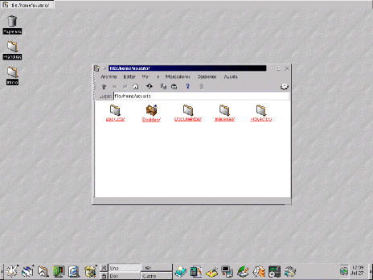

Next: Configuración del entorno KDE
Up: KDE
Previous: KDE
Índice General
El K Desktop Environment, mejor conocido como KDE es uno de los
entornos de escritorio más conocidos y utilizados en la actualidad,
junto con el GNU Object Model Environment o GNOME son quizás
los dos entornos mas utilizados y en los se está realizando mayor
desarrollo. La razón de su éxito radica en su facilidad de uso, su
similitud con el entorno de Microsoft Windows, su funcionalidad
y su gratuidad.
En qué radica un entorno de escritorio?, quizás el lector, si
viene del ``mundo windows'', no se haya percatado de su existencia por
más que haya estado trabajando siempre con uno; un entorno de
escritorio consta de módulos de software trabajando en conjunto con el
servidor gráfico llamado X con el fin de proveer al usuario de
un área de trabajo (llamada escritorio), una barra de acceso
rápido a las aplicaciones y la posibilidad de usar íconos y
carpetas en el escritorio para organizar los archivos.
El KDE provee estas funciones, y varias más, como ser:
- Protector de pantalla (screensaver)
- Bloqueo de sesión con contraseña
- Funciones drag&drop
- Personalización de ventanas a través de los Temas de Escritorio
- Uso de múltiples escritorios virtuales
- Menúes personalizables
Para dar una mejor idea de como se ve un escritorio de KDE recién
instalado, se incluye la figura 3.1
Figura 3.1:
Escritorio inicial del KDE
|

|
Next: Configuración del entorno KDE
Up: KDE
Previous: KDE
Índice General
Proyecto Cursos - LuCAS - http://lucas.hispalinux.es/htmls/cursos.html